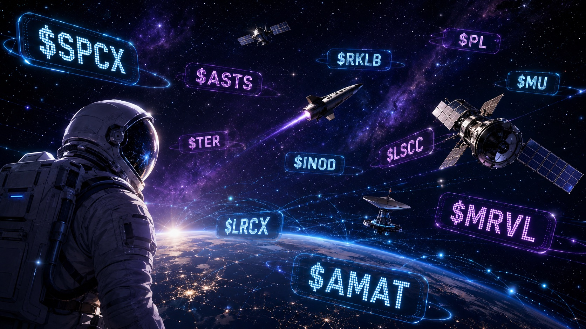

Premarket Note · Space + AI Infrastructure
SpaceX Is the Attention Magnet. The Real Premarket Trade Is Broader AI Infrastructure.
June 15, 2026 — premarket note.

- Attention driver: SpaceX (SPCX) — the debut pulling retail and index-flow attention.
- Sector affected: the space economy plus the broader AI infrastructure stack — chips, memory, semicap, testing.
- Risk angle: the AI bubble index is heating up with valuation already stretched.
- Confirms the thesis: the bid stays broad — suppliers and second-order names keep getting bought, not just $SPCX.
- Breaks the thesis: the move narrows back to SpaceX alone, or NVDA-led leadership rolls over.
The market loves a simple story.
First it was $NVDA. Then it was “everything AI.” Now the tape is trying to manufacture the next branch of the same tree: space + AI infrastructure.
The obvious headline is $SPCX.
New IPO. Retail attention. Starlink narrative. Index-flow speculation. Orbital compute optionality. A ticker built for screens, group chats, and bad decisions made before the first coffee.
But the premarket tape is not only about SpaceX. Today's Santro AI movers show a broader bid across the AI stack. That is not one trade. That is a capital-flow map.
The actual space basket
The direct space-economy names are:
$SPCX — SpaceX / Starlink / launch / satellite infrastructure. The anchor. It carries the attention, the liquidity and the narrative premium. If traders want the obvious “space AI” headline, this is where they look first.
$ASTS — AST SpaceMobile / satellite-to-phone connectivity. The direct-to-device satellite broadband trade. Not pure AI, but very much part of the space-connectivity layer.
$RKLB — Rocket Lab / launch services and space systems. The cleaner public-space infrastructure name: rockets, spacecraft, satellite components and mission services.
$PL — Planet Labs / satellite imagery and earth-observation data. The strongest data angle inside the space basket. Satellite imagery becomes more valuable when AI can classify, interpret and monetize it faster.
This is the actual space basket. Not every green AI ticker is a space ticker. That distinction matters.
The broader AI infrastructure bid
Then there is the second basket: not space, but the machinery underneath AI.
$MU — Micron. Memory and storage. If AI demand expands, memory bandwidth and capacity remain core bottlenecks.
$TER — Teradyne. Semiconductor testing and automation. Less sexy than the front-end chip story, but critical if the AI hardware cycle keeps expanding.
$INOD — Innodata. AI data services, data engineering and model-support workflows — the messy human/data layer behind AI systems.
$LSCC — Lattice Semiconductor. Programmable chips and low-power edge compute. Relevant to embedded AI, edge systems and specialized compute.
$LRCX — Lam Research. Semiconductor equipment. Picks-and-shovels exposure to the chipmaking cycle.
$MRVL — Marvell. AI data infrastructure, networking and custom silicon — the AI connectivity layer.
$AMAT — Applied Materials. Semicap equipment and materials engineering, tied to chip capacity and capex cycles.
This is why the tape matters. The market is not only buying the headline. It is buying the supply chain. That is usually how speculative themes mature: first traders buy the obvious winner, then they chase the suppliers, then the second-order beneficiaries, then they start inventing baskets. That is where opportunity begins. That is also where mistakes begin.
Winners
Losers
The losers matter too
Today's losers are not dramatic, but they are useful. $DLR -2.27%, $ARM -1.26%, $BABA -0.35%. This tells us the AI bid is selective. The market is not blindly buying every AI-adjacent name — it is rotating.
Memory is bid. Testing is bid. Semicap is bid. SpaceX is bid. Some data-center, chip-IP and China-platform exposure is not getting the same love. That is the more important signal. This is not “everything AI goes up.” This is rotation.
Bubble risk: heating up, but not mania
Santro AI's AI Bubble Index is now 56.8 / 100 — Heating Up. The internal picture is uneven.
Translation: this is not a cold tape anymore, but it is also not full mania. The risk is not that nobody cares. The risk is that everybody starts caring at the same time while valuations are already stretched.
That is the zone where traders need to separate attention from direction. Attention creates liquidity. Liquidity creates opportunity. And when late buyers arrive, liquidity also creates exits.
The bigger question
The market is not just asking “what is the next SpaceX?” It is asking something bigger: what does AI need if the next compute-and-data layer moves beyond the traditional data center?
That question pulls in more than one ticker. It pulls in satellites. It pulls in connectivity. It pulls in geospatial data. It pulls in chips, memory, semiconductor equipment, testing and AI data services.
Space basket
The attention layer
AI infrastructure basket
The supply-chain layer
The cleanest way to read today's tape is not “space stocks are up.” The cleaner read is: $SPCX is pulling attention; $ASTS, $RKLB and $PL form the direct space basket; $MU, $TER, $INOD, $LSCC, $LRCX, $MRVL and $AMAT show the broader AI infrastructure bid. The trade is not one ticker. It is a stack. And right now, the stack is getting bid.
Bottom line
This is how narratives usually spread. From obvious winner, to suppliers, to second-order names, to baskets — to mania, if capital keeps arriving. We are not at full mania yet. But the tape is heating up.
Hot means attention, not direction.
Not financial advice. We're traders sharing how we read the tape, not telling you what to buy. Figures are a June 15, 2026 premarket snapshot and will change.